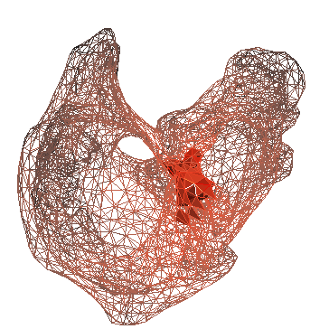
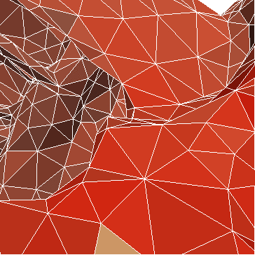

Adaptivity and error control go hand in hand for numerical simulations of differential equations. Controlling the error of a numerical approximation is a prerequisite for more reliable simulations, while adapting the discretization to local features of the problem can lead to more efficient simulations. Goal-oriented adaptivity and error control allow a further enhancement: numerical simulations targeted at a specific quantity of interest.
 Here you see an example: automated adaptive refinement steered towards the computation of the wall stresses at a part of the human atria modelled by an anisotropic, hyperelastic body [1].
The FEniCS components support automated goal-oriented error control for stationary variational problems. What does this mean? This means that any variational problem that can be solved with a variational solver can just as easily be solved with an adaptive variational solver. The adaptive variational solver simply takes a tolerance and the quantity of interest as additional input. So, in the most basic case, instead of:
solve(F == 0, w, bc)
one can write
solve(F == 0, w, bc, tol=..., M=...)
You might wonder how it works? Well, in short, the adaptive variational solver carries out a loop over meshes; starting with an initial mesh, it estimates the error and where to best refine, refines, and continues until the error tolerance is reached. The error estimates and refinement indicators are based on automatically generated dual-weighted-residual based estimates. In particular, these estimates and indicators are generated (on the fly) for each given variational problem and goal-functional, and therefore directly tuned to the problem at hand. For more information, see [2].
Below is a simple code example for the automated adaptive variational solvers using the DOLFIN Python interface. The variational problem at hand is the stationary Navier–Stokes equations over a mesh of an aneurysm [3], subjected to a prescribed pressure at one of the inlet vessels. The goal functional (or target quantity of interest) is the outflux of one of the other vessels.
More standalone examples (including C++ examples) can be found in the DOLFIN demo directories.
from dolfin import *
# Load mesh and boundary indicators from file
mesh = Mesh("aneurysm.xml")
bc_markers = MeshFunction("uint", mesh, "markers.xml")
ds = Measure("ds")[bc_markers]
# Define function spaces
V = VectorFunctionSpace(mesh, "CG", 2)
Q = FunctionSpace(mesh, "CG", 1)
W = V*Q
# Create functions
(v, q) = TestFunctions(W)
w = Function(W)
(u, p) = split(w)
# Define variational form
n = FacetNormal(mesh)
F = (0.01*inner(grad(u), grad(v)) + inner(grad(u)*u, v)
- div(v)*p + q*div(u))*dx + dot(n, v)*ds(3)
# No-slip boundary condition for the velocity
bc = DirichletBC(W.sub(0), Constant((0.0, 0.0, 0.0)), bc_markers, 4)
# Define goal functional
M = inner(u,n)*ds(2)
# Solve adaptively
solve(F == 0, w, bc, tol=0.01, M=M)
One final tip: in our experience, (goal-oriented) adaptivity based on mesh refinement is typically the most useful if the variational problem at hand has local features, such as sharp interfaces or singularities, or if the goal functional is localized to certain parts of the computational domain.
Footnotes
| [1] | Mesh of the human atria constructed at Simula Research Laboratory from a segmentation provided by Institute of Biomedical Engineering at Karlsruhe Institute of Technology of the The Visible Man data set, made available by the National Institutes of Health. |
| [2] | Marie E. Rognes and Anders Logg: Automated goal-oriented error control I: stationary variational problems, submitted to journal, 2010. |
| [3] | Mesh of aneurysm constructed by Ida Norderhaug Drøsdal and Kent-Andre Mardal based on CT images provided by Søren Jakob Bakke at the National hospital of Norway. |